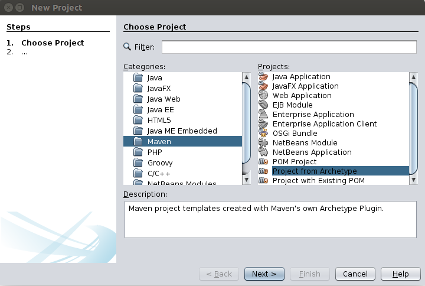
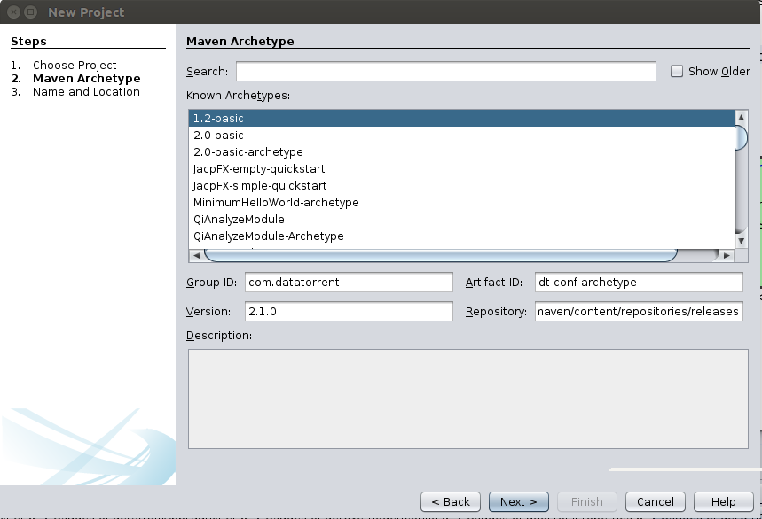
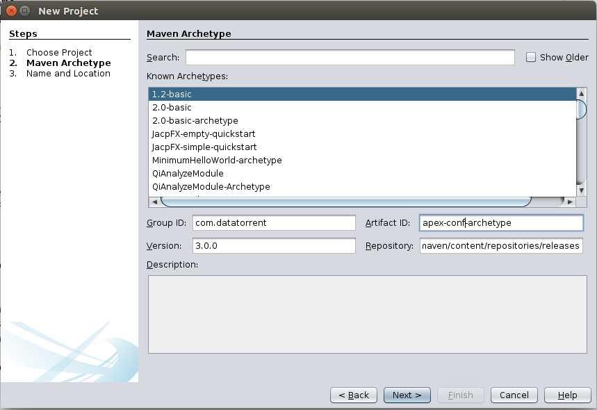

Apache Apex Configuration Packages
An Apache Apex Application Configuration Package is a zip file that contains configuration files and additional files to be launched with an Application Package using Apex CLI or REST API. This guide assumes the reader’s familiarity of Application Package. Please read the Application Package document to get yourself familiar with the concept first if you have not done so.
Requirements
You will need have the following installed:
- Apache Maven 3.0 or later (for assembling the Config Package)
- Apex 3.4.0 or later (for launching the App Package with the Config Package in your cluster)
Creating Your First Configuration Package
You can create a Configuration Package using your Linux command line, or using your favorite IDE.
Using Command Line
First, change to the directory where you put your projects, and create a DT configuration project using Maven by running the following command. Replace "com.example", "mydtconfig" and "1.0-SNAPSHOT" with the appropriate values:
$ mvn archetype:generate \
-DarchetypeGroupId=org.apache.apex \
-DarchetypeArtifactId=apex-conf-archetype -DarchetypeVersion=3.4.0 \
-DgroupId=com.example -Dpackage=com.example.mydtconfig -DartifactId=mydtconfig \
-Dversion=1.0-SNAPSHOT
This creates a Maven project named "mydtconfig". Open it with your favorite IDE (e.g. NetBeans, Eclipse, IntelliJ IDEA). Try it out by running the following command:
$ mvn package
The "mvn package" command creates the Config Package file in target directory as target/mydtconfig.apc. You will be able to use that Configuration Package file to launch an Apache Apex application.
Using IDE
Alternatively, you can do the above steps all within your IDE. For example, in NetBeans, select File->New Project. Then choose “Maven” and “Project from Archetype” in the dialog box, as shown.

Then fill the Group ID, Artifact ID, Version and Repository entries as shown below.

Group ID: org.apache.apex Artifact ID: apex-conf-archetype Version: 3.4.0 (or any later version)
Press Next and fill out the rest of the required information. For example:

Click Finish, and now you have created your own Apex Configuration Package project. The procedure for other IDEs, like Eclipse or IntelliJ, is similar.
Assembling your own configuration package
Inside the project created by the archetype, these are the files that you should know about when assembling your own configuration package:
./pom.xml
./src/main/resources/classpath
./src/main/resources/files
./src/main/resources/META-INF/properties.xml
./src/main/resources/META-INF/properties-{appname}.xml
pom.xml
Example:
<groupId>com.example</groupId>
<version>1.0.0</version>
<artifactId>mydtconf</artifactId>
<packaging>jar</packaging>
<!-- change these to the appropriate values -->
<name>My DataTorrent Application Configuration</name>
<description>My DataTorrent Application Configuration Description</description>
<properties>
<datatorrent.apppackage.name>mydtapp</datatorrent.apppackage.name>
<datatorrent.apppackage.minversion>1.0.0</datatorrent.apppackage.minversion>
<datatorrent.apppackage.maxversion>1.9999.9999</datatorrent.apppackage.maxversion>
<datatorrent.appconf.classpath>classpath/*</datatorrent.appconf.classpath>
<datatorrent.appconf.files>files/*</datatorrent.appconf.files>
</properties>
In pom.xml, you can change the following keys to your desired values
<groupId><version><artifactId><name><description>
You can also change the values of
<datatorrent.apppackage.name><datatorrent.apppackage.minversion><datatorrent.apppackage.maxversion>
to reflect what app packages should be used with this configuration package. Apex will use this information to check whether a configuration package is compatible with the application package when you issue a launch command.
./src/main/resources/classpath
Place any file in this directory that you’d like to be copied to the compute machines when launching an application and included in the classpath of the application. Example of such files are Java properties files and jar files.
./src/main/resources/files
Place any file in this directory that you’d like to be copied to the compute machines when launching an application but not included in the classpath of the application.
Properties XML file
A properties xml file consists of a set of key-value pairs. The set of key-value pairs specifies the configuration options the application should be launched with.
Example:
<configuration>
<property>
<name>some-property-name</name>
<value>some-property-value</value>
</property>
...
</configuration>
Names of properties XML file:
- properties.xml: Properties that are global to the Configuration Package
- properties-{appName}.xml: Properties that are specific when launching an application with the specified appName within the Application Package.
After you are done with the above, remember to do mvn package to generate a new configuration package, which will be located in the target directory in your project.
Zip structure of configuration package
Apex Application Configuration Package files are zip files. You can examine the content of any Application Configuration Package by using unzip -t on your Linux command line. The structure of the zip file is as follow:
META-INF
MANIFEST.MF
properties.xml
properties-{appname}.xml
classpath
{classpath files}
files
{files}
Launching with CLI
-conf option of the launch command in CLI supports specifying configuration package in the local filesystem. Example:
apex> launch mydtapp-1.0.0.apa -conf mydtconfig.apc
This command expects both the application package and the configuration package to be in the local file system.
Related REST API
POST /ws/v2/configPackages
Payload: Raw content of configuration package zip
Function: Creates or replace a configuration package zip file in HDFS
Curl example:
$ curl -XPOST -T {name}.apc http://{yourhost:port}/ws/v2/configPackages
GET /ws/v2/configPackages?appPackageName=...&appPackageVersion=...
All query parameters are optional
Function: Returns the configuration packages that the user is authorized to use and that are compatible with the specified appPackageName, appPackageVersion and appName.
GET /ws/v2/configPackages/<user>?appPackageName=...&appPackageVersion=...
All query parameters are optional
Function: Returns the configuration packages under the specified user and that are compatible with the specified appPackageName, appPackageVersion and appName.
GET /ws/v2/configPackages/<user>/<name>
Function: Returns the information of the specified configuration package
GET /ws/v2/configPackages/<user>/<name>/download
Function: Returns the raw config package file
Curl example:
$ curl http://{yourhost:port}/ws/v2/configPackages/{user}/{name}/download > xyz.apc
$ unzip -t xyz.apc
POST /ws/v2/appPackages/<user>/<app-pkg-name>/<app-pkg-version>/applications/{app-name}/launch?configPackage=<user>/<confpkgname>
Function: Launches the app package with the specified configuration package stored in HDFS.
Curl example:
$ curl -XPOST -d ’{}’ http://{yourhost:port}/ws/v2/appPackages/{user}/{app-pkg-name}/{app-pkg-version}/applications/{app-name}/launch?configPackage={user}/{confpkgname}